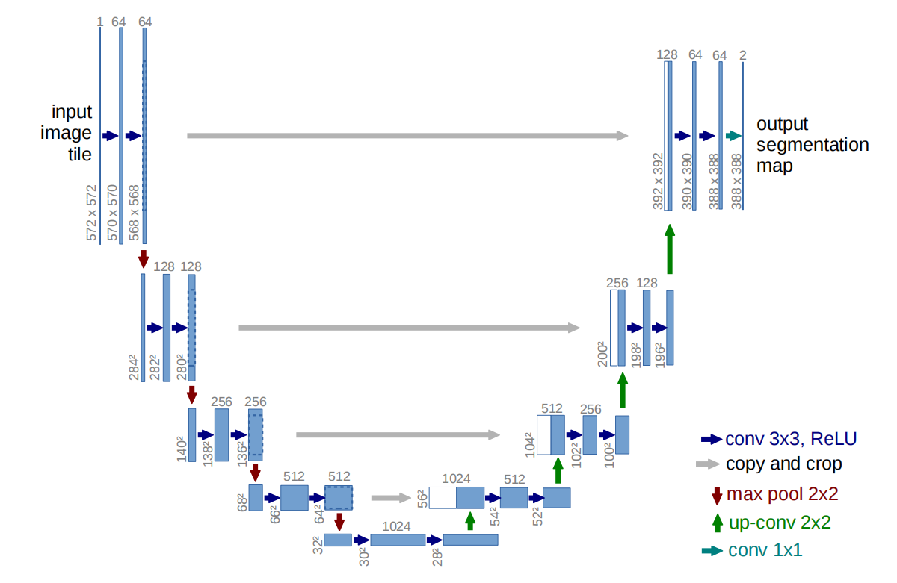
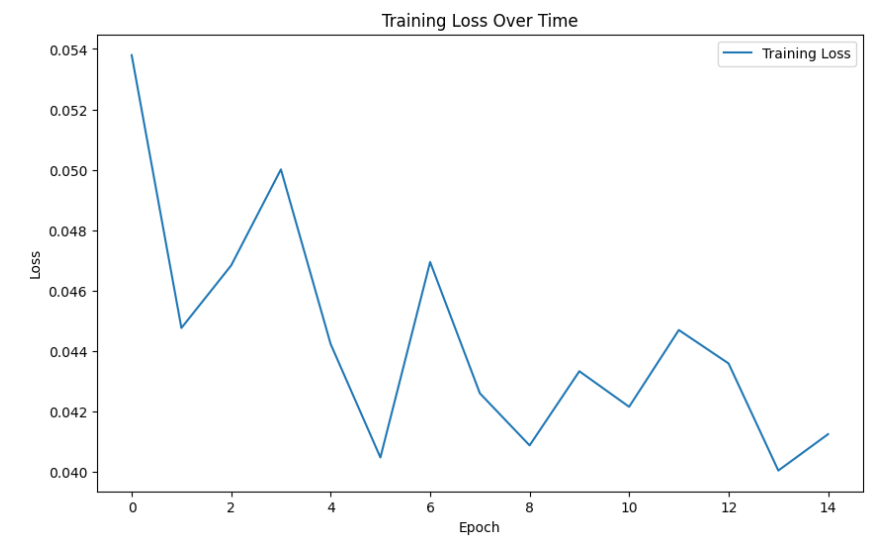

本文介绍UNet的实现。 本文使用了Kaggle数据集：TGS Salt Identification Challenge。读者可以自行下载其中的train.zip。
数据预处理
代码如下。
1 | import os |
UNet网络构造
我们将根据这张网络图片进行复现： 
1
2
3
4
5
6
7
8
9
10
11
12
13
14
15
16
17
18
19
20
21
22
23
24
25
26
27
28
29
30
31
32
33
34
35
36
37
38
39
40
41
42
43
44
45
46
47
48
49
50
51
52
53
54
55
56
57
58
59
60
61
62
63
64
65
66
67
68
69
70
71
72
73
74
75
76
77
78
79
80
81
82
83
84
85
86
87
88
89
90
91
92
93
94
95
96
97
98
99
100
101
102
103
104
105
106import torch
import torch.nn as nn
from torchvision import models
from torch.nn.functional import relu
import os
os.environ["KMP_DUPLICATE_LIB_OK"]="TRUE"
class UNet(nn.Module):
def __init__(self, n_class):
super().__init__()
# input: 572x572x3
self.e11 = nn.Conv2d(3, 64, kernel_size=3) # output: 570x570x64
self.e12 = nn.Conv2d(64, 64, kernel_size=3) # output: 568x568x64
self.pool1 = nn.MaxPool2d(kernel_size=2, stride=2) # output: 284x284x64
# input: 284x284x64
self.e21 = nn.Conv2d(64, 128, kernel_size=3) # output: 282x282x128
self.e22 = nn.Conv2d(128, 128, kernel_size=3) # output: 280x280x128
self.pool2 = nn.MaxPool2d(kernel_size=2, stride=2) # output: 140x140x128
# input: 140x140x128
self.e31 = nn.Conv2d(128, 256, kernel_size=3) # output: 138x138x256
self.e32 = nn.Conv2d(256, 256, kernel_size=3) # output: 136x136x256
self.pool3 = nn.MaxPool2d(kernel_size=2, stride=2) # output: 68x68x256
# input: 68x68x256
self.e41 = nn.Conv2d(256, 512, kernel_size=3) # output: 66x66x512
self.e42 = nn.Conv2d(512, 512, kernel_size=3) # output: 64x64x512
self.pool4 = nn.MaxPool2d(kernel_size=2, stride=2) # output: 32x32x512
# input: 32x32x512
self.e51 = nn.Conv2d(512, 1024, kernel_size=3) # output: 30x30x1024
self.e52 = nn.Conv2d(1024, 1024, kernel_size=3) # output: 28x28x1024
# Decoder
self.upconv1 = nn.ConvTranspose2d(1024, 512, kernel_size=2, stride=2)# output: 56x56x512
# 注意：此时和之前的结果进行了拼接，变成了56x56x1024
self.d11 = nn.Conv2d(1024, 512, kernel_size=3)# output: 54x54x512
self.d12 = nn.Conv2d(512, 512, kernel_size=3)# output: 52x52x512
self.upconv2 = nn.ConvTranspose2d(512, 256, kernel_size=2, stride=2)
self.d21 = nn.Conv2d(512, 256, kernel_size=3)
self.d22 = nn.Conv2d(256, 256, kernel_size=3)
self.upconv3 = nn.ConvTranspose2d(256, 128, kernel_size=2, stride=2)
self.d31 = nn.Conv2d(256, 128, kernel_size=3)
self.d32 = nn.Conv2d(128, 128, kernel_size=3)
self.upconv4 = nn.ConvTranspose2d(128, 64, kernel_size=2, stride=2)
self.d41 = nn.Conv2d(128, 64, kernel_size=3)
self.d42 = nn.Conv2d(64, 64, kernel_size=3)
# Output layer
self.outconv = nn.Conv2d(64, n_class, kernel_size=1)
def forward(self, x):
# Encoder
xe11 = relu(self.e11(x))
xe12 = relu(self.e12(xe11))
xp1 = self.pool1(xe12)
xe21 = relu(self.e21(xp1))
xe22 = relu(self.e22(xe21))
xp2 = self.pool2(xe22)
xe31 = relu(self.e31(xp2))
xe32 = relu(self.e32(xe31))
xp3 = self.pool3(xe32)
xe41 = relu(self.e41(xp3))
xe42 = relu(self.e42(xe41))
xp4 = self.pool4(xe42)
xe51 = relu(self.e51(xp4))
xe52 = relu(self.e52(xe51))
# Decoder
xu1 = self.upconv1(xe52)
xe42 = xe42[:,:,4:60,4:60]
xu11 = torch.cat([xu1, xe42], dim=1)
xd11 = relu(self.d11(xu11))
xd12 = relu(self.d12(xd11))
xu2 = self.upconv2(xd12)
xe32 = xe32[:, :, 16:120, 16:120]
xu22 = torch.cat([xu2, xe32], dim=1)
xd21 = relu(self.d21(xu22))
xd22 = relu(self.d22(xd21))
xu3 = self.upconv3(xd22)
xe22 = xe22[:, :, 40:240, 40:240]
xu33 = torch.cat([xu3, xe22], dim=1)
xd31 = relu(self.d31(xu33))
xd32 = relu(self.d32(xd31))
xu4 = self.upconv4(xd32)
xe12 = xe12[:, :, 88:480, 88:480]
xu44 = torch.cat([xu4, xe12], dim=1)
xd41 = relu(self.d41(xu44))
xd42 = relu(self.d42(xd41))
# Output layer
out = self.outconv(xd42)
return out
相关函数
1 | # 1. Dataloader |
参数设置
1 | # UNet模型实例化 |
初始化Dataset和Dataloader
1 | # 用来初始化Dataset和Dataloader |
训练模型
1 | # 训练模型 |

总结
UNet的网络结构相对简单，没有太大的复现难度。以上代码已在AutoDL平台正常运行。后期将会把笔记本开源分享在该平台。